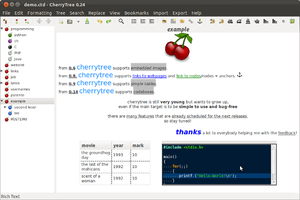
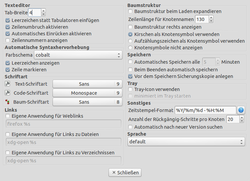

Cherrytree
Dieser Artikel wurde für die folgenden Ubuntu-Versionen getestet:
Ubuntu 16.04 Xenial Xerus
Ubuntu 14.04 Trusty Tahr
Zum Verständnis dieses Artikels sind folgende Seiten hilfreich:
Cherrytree  ist ein Gliederungseditor (Outliner), mit dessen Hilfe sich Notizen aller Art sammeln und sortieren lassen. Die Gliederung erfolgt über eine Baumstruktur in der linken Hälfte des Programmfensters. Jeder Eintrag dort repräsentiert eine hierarchisch einsortierte Textseite und wird als „Knoten“ bezeichnet.
ist ein Gliederungseditor (Outliner), mit dessen Hilfe sich Notizen aller Art sammeln und sortieren lassen. Die Gliederung erfolgt über eine Baumstruktur in der linken Hälfte des Programmfensters. Jeder Eintrag dort repräsentiert eine hierarchisch einsortierte Textseite und wird als „Knoten“ bezeichnet.
Der Programmname bezieht sich auf die Verwendung verschiedenfarbiger Kirschen zur Kennzeichnung unterschiedlicher Ebenen. Eine der Stärken des Programms ist der enthaltene Editor. Durch viele weitere Funktionen und Eigenschaften hebt sich Cherrytree von anderen, einfacheren Outlinern ab:
|  |
| Programmfenster mit Formatierungsbeispielen |
nummerierte und nicht nummerierte Listen und Aufzählungen (auch mehrzeilig mit ⇧ + ⏎ )
Tabellen (können im CSV-Format im- und exportiert werden)
Codeboxen mit Syntax-Hervorhebung via GtkSourceView (keine weitere Formatierung möglich)
Hyperlinks: intern (auf Knoten oder Anker) und extern (Dateien, Ordner und Internetadressen)
durch Programmierung in Python für viele Plattformen erhältlich – u.a. für Linux und Windows
(optionaler) Kennwortschutz beim Speichern von Noitizbuchdateien
Eingefügte Bilder können in Grenzen bearbeitet werden (vergrößern/verkleinern, rotieren) und bei Bedarf im PNG-Format wieder extern gespeichert werden
Inhaltsverzeichnis für einen Knoten erstellen (basierend auf den als Überschrift formatierten Zeilen)
Umsortierung vorhandener Knoten via "Drag&Drop" oder Dialogfeld
Installation¶
 Das Programm ist ab Ubuntu 12.04 in den offiziellen Paketquellen enthalten. Folgendes Paket muss installiert [1] werden:
Das Programm ist ab Ubuntu 12.04 in den offiziellen Paketquellen enthalten. Folgendes Paket muss installiert [1] werden:
cherrytree (universe)
 mit apturl
mit apturl
Paketliste zum Kopieren:
sudo apt-get install cherrytree
sudo aptitude install cherrytree
PPA¶
Die aktuellste Version ist über ein "Personal Package Archiv" (PPA) [2] verfügbar.
Adresszeile zum Hinzufügen des PPAs:
ppa:giuspen/ppa
Hinweis!
Zusätzliche Fremdquellen können das System gefährden.
Ein PPA unterstützt nicht zwangsläufig alle Ubuntu-Versionen. Weitere Informationen sind der  PPA-Beschreibung des Eigentümers/Teams giuspen zu entnehmen.
PPA-Beschreibung des Eigentümers/Teams giuspen zu entnehmen.
Damit Pakete aus dem PPA genutzt werden können, müssen die Paketquellen neu eingelesen werden.
Nach dem Aktualisieren der Paketquellen erfolgt die Installation wie oben angegeben.
Bedienung¶
Nach der Installation ist das Programm bei Ubuntu-Varianten mit einem Anwendungsmenü unter "Zubehör → CherryTree" zu finden [3].
In der Bedienung unterscheidet sich das Programm kaum von der anderer Outliner. In der linken Spalte des Programmfensters befindet sich eine Baumstruktur mit der Möglichkeit, Knoten und Unterknoten anzulegen. Das Auf- bzw. Zuklappen einzelner Bereiche ("Falten") erleichtert die Übersicht. Die rechte Spalte enthält den Inhalt des aktuellen Knotens bzw. Unterknotens. Die Anordnung beider Spalten kann vertauscht werden (Baumstruktur rechts, Inhalte links).
Unüblich ist jedoch die Zeilennavigation vor Programmversion 0.37: der Druck auf die Tasten Pos1 und Ende bewegt die Eingabemarke nicht an den Anfang bzw. das Ende der physikalischen (Bildschirm-) Zeile, sondern der logischen Zeile (also den Bereich zwischen zwei Zeilenumbrüchen) – auch wenn diese sich über mehrere Bildschirmzeilen erstreckt.
Formatierungen¶
fett
kursiv
unterstrichen
durchgestrichenklein
hochgestellt
tiefgestellt
feste und variable Schriftbreite
Überschriften (erster, zweiter und dritter Ordnung)
Text- und Hintergrundfarbe (Textmarker-Funktion) veränderbar
Die Schriftgröße wird zentral in den Einstellungen festgelegt. Die Ausrichtung von Text, Bildern, Tabellen und Codeboxen kann links-, rechtsbündig oder zentriert erfolgen.
Dateibehandlung¶
Import¶
Der Import bestehender Dokumente ist über das Menü "Importieren" möglich. Es können Daten in den Formaten HTML und (Nur-)Text importiert werden – einzelne und mehrere Dateien sowie ganze Verzeichnisse mit solchen Dateien.
Zudem liest Cherrytree Dateien / Verzeichnisstrukturen der Programme Zim, Tomboy, Notecase, Basket, Keepnote, Tuxcards, Treepad Lite, Knowit u.a.
Fügt man mehrere Dateien aus einem Dateimanager ein, so wird automatisch eine Liste mit Links zu den Originaldateien erstellt. Bilddateien werden dagegen automatisch erkannt und importiert (nicht verlinkt).
Speichern¶
Gespeichert werden alle Textknoten in einer einzigen Datei (im Gegensatz etwa zu Zim, das jeden Text in einer separaten Textdatei speichert). Zur Auswahl stehen zwei Datenformate, jeweils in einer unverschlüsselten und einer verschlüsselten Variante:
Die letztere Variante soll schneller und weniger speicherintensiv sein, während erstere den Vorteil hat, ohne weitere Hilfsmittel auch in einem Texteditor betrachtet werden zu können.
Der optinal wählbare Kennwortschutz beruht auf einer Komprimierung und Verschlüsselung mit 7-Zip. Verschlüsselt wird mit 256-Bit AES. Praktisch heißt das: Die Verschlüsselung ist so sicher, dass kein Weg bekannt ist, die Datei wieder zu entschlüsseln, sollte das Kennwort verloren gehen.
Export¶
Exportiert werden kann der Notizbuchinhalt oder Teile davon nach HTML, PDF, (Nur-)Text (einzelne sowie mehrere Dateien) und ins Cherrytree-eigene Format.
Der Export ins PDF-Format von einzelnen Knoten, Knoten mit Unterknoten oder des kompletten Dokuments wurde in älteren Versionen nicht immer korrekt umgesetzt. Spätestens seit Versionen 0.32 scheint das Problem behoben zu sein.
Einstellungen¶
|  |
| Konfiguration in einer älteren Version von Cherrytree |
Der Klick auf "Bearbeiten → Einstellungen" führt zu den Programm-Optionen. Obwohl diese inzwischen sehr umfangreich geworden sind und deshalb durch Tabs untergliedert wurden, ist der Dialog sehr übersichtlich. Nebenstehende Abbildung einer älteren Fassung des Konfigurationsdialogs vermittelt zumindest einen Eindruck der grundlegenden Einstellungsmöglichkeiten.
Die individuelle Konfiguration wird in der Datei ~/.config/cherrytree/config.cfg gespeichert – und zwar im Ini-Format.
 Übersichtsartikel
Übersichtsartikel- Erstellt mit Inyoka
-
 2004 – 2017 ubuntuusers.de • Einige Rechte vorbehalten
2004 – 2017 ubuntuusers.de • Einige Rechte vorbehalten
Lizenz • Kontakt • Datenschutz • Impressum • Serverstatus -
Serverhousing gespendet von